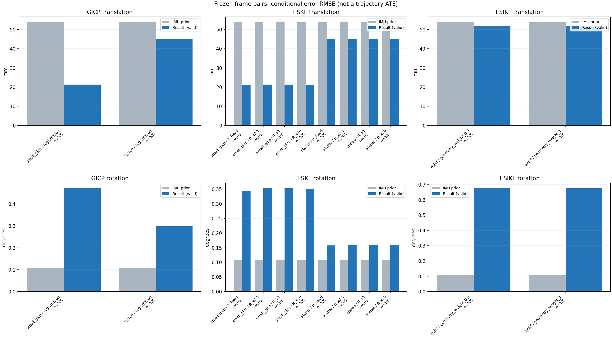

20261015_113028_roll_right · depth=disparity_cache · cache=b2a18bd08f602479a239
模型视差：/home/ubuntu22/slam/SIO_SLAM/models/tensorrt/disp_896x448_fp16.plan；engine SHA256=604cf6ac1f705c877260711730dd5d2d58c2a21f3020c03c668401ef7fb1e768。输入为生产裁剪与光照处理后的 RGB 0..255；此实验使用原始浮点像素视差，不应用完整前端的邻域视差后处理。
原始 ONNX SHA256：e9f49736a65d68d06681add463866b6defdf78fdd7f4f50f6cc941b682fdc0bc。
代价体图改写验证：ONNX Runtime 固定随机特征输入，最大绝对误差 0；该项检查图改写，完整模型精度仍需由录制数据评估。
配准代码版本：744ac2d993ae629b0cc44a3b1d995e04ab4fad48；观测生成版本：744ac2d993ae629b0cc44a3b1d995e04ab4fad48。
固定图像对与纯 IMU 先验；ESKF 回放固定 GICP 观测，ESIKF 直接读取点云。真值只用于此报告。
同时查看 converged 与 solver_status：上游默认 Stereo 在 max_iter / stopped_at_minimum 时也可能置 converged=true。valid 表示输入检查通过，不表示精度提升。欧氏 GICP 未提供独立的点距 RMSE，该列显示 NaN。
误差按每对图像的锚点计算，单位 m / degrees。此处 RMSE 不是全序列 ATE；末帧受同一锚点条件约束。NIS 与条件马氏距离是诊断量，少量相关图像对不能用于宣称协方差已校准。
全部指标 CSV · R / P / K 矩阵 CSV · Stereo 求解逐轮 CSV · ESIKF 逐轮 CSV · 配置快照 · 矢量图
| stage | method | variant | valid | total | translation RMSE (m) | rotation RMSE (deg) |
|---|---|---|---|---|---|---|
| esikf | esikf | geometry_weight_0.5 | 5 | 5 | 0.051882 | 0.67665 |
| esikf | esikf | geometry_weight_1 | 5 | 5 | 0.051947 | 0.67642 |
| eskf | small_gicp | R_fixed | 5 | 5 | 0.021194 | 0.34399 |
| eskf | small_gicp | R_x0.1 | 5 | 5 | 0.021282 | 0.35332 |
| eskf | small_gicp | R_x1 | 5 | 5 | 0.021275 | 0.35305 |
| eskf | small_gicp | R_x10 | 5 | 5 | 0.021209 | 0.35071 |
| eskf | stereo | R_fixed | 5 | 5 | 0.045114 | 0.15776 |
| eskf | stereo | R_x0.1 | 5 | 5 | 0.045115 | 0.15815 |
| eskf | stereo | R_x1 | 5 | 5 | 0.045115 | 0.15815 |
| eskf | stereo | R_x10 | 5 | 5 | 0.045115 | 0.15815 |
| gicp | small_gicp | registration | 5 | 5 | 0.021287 | 0.47228 |
| gicp | stereo | registration | 5 | 5 | 0.045127 | 0.29853 |

| stage | case | method | variant | status | solver_status | inliers | converged | covariance_convention | covariance_from_hessian | fitness | registration_rmse_m | prior_trans_error_m | result_trans_error_m | prior_rot_error_deg | result_rot_error_deg | R_rot_trace_rad2 | R_pos_trace_m2 | nis_regularized |
|---|---|---|---|---|---|---|---|---|---|---|---|---|---|---|---|---|---|---|
| gicp | static_start | small_gicp | registration | eligible | 10141 | 1 | right_source_body | 1 | 0.97052 | nan | 7.6181e-05 | 0.011192 | 0.0061233 | 0.25274 | 2.9158e-06 | 4.6267e-05 | nan | |
| gicp | static_start | stereo | registration | eligible | max_iter | 9433 | 1 | left_target_body | 1 | 0.89855 | 0.046033 | 7.6181e-05 | 0.0011134 | 0.0061233 | 0.015406 | 1.3543e-08 | 1.2978e-07 | nan |
| gicp | sync_motion | small_gicp | registration | eligible | 9845 | 1 | right_source_body | 1 | 0.92311 | nan | 0.00070607 | 0.019626 | 0.0094797 | 0.2554 | 3.269e-06 | 4.9069e-05 | nan | |
| gicp | sync_motion | stereo | registration | eligible | max_iter | 9585 | 1 | left_target_body | 1 | 0.89714 | 0.07899 | 0.00070607 | 0.0021725 | 0.0094797 | 0.014401 | 1.3951e-08 | 1.3343e-07 | nan |
| gicp | main_motion | small_gicp | registration | eligible | 12390 | 1 | right_source_body | 1 | 0.93186 | nan | 0.001643 | 0.029406 | 0.075969 | 0.4492 | 2.3843e-06 | 4.6318e-05 | nan | |
| gicp | main_motion | stereo | registration | eligible | max_iter | 11837 | 1 | left_target_body | 1 | 0.89127 | 0.066401 | 0.001643 | 0.0015326 | 0.075969 | 0.076253 | 1.0674e-08 | 1.1922e-07 | nan |
| gicp | main_motion_long | small_gicp | registration | eligible | 12069 | 1 | right_source_body | 1 | 0.79188 | nan | 0.0098867 | 0.020892 | 0.22748 | 0.61769 | 2.7342e-06 | 5.2844e-05 | nan | |
| gicp | main_motion_long | stereo | registration | eligible | max_iter | 11778 | 1 | left_target_body | 1 | 0.76342 | 0.087208 | 0.0098867 | 0.0077845 | 0.22748 | 0.26314 | 1.1409e-08 | 1.346e-07 | nan |
| gicp | static_end | small_gicp | registration | eligible | 9727 | 1 | right_source_body | 1 | 0.96155 | nan | 0.1201 | 0.021307 | 0.0045728 | 0.63468 | 4.0424e-06 | 4.5482e-05 | nan | |
| gicp | static_end | stereo | registration | eligible | max_iter | 7752 | 1 | left_target_body | 1 | 0.76806 | 0.10658 | 0.1201 | 0.10056 | 0.0045728 | 0.60836 | 1.9623e-08 | 1.9433e-07 | nan |
| eskf | static_start | small_gicp | R_x0.1 | updated | 10141 | 1 | right_source_body | 1 | 0.97052 | nan | 7.6181e-05 | 0.011188 | 0.0061233 | 0.25253 | 2.9158e-07 | 4.6267e-06 | 0.033692 | |
| eskf | static_start | small_gicp | R_x1 | updated | 10141 | 1 | right_source_body | 1 | 0.97052 | nan | 7.6181e-05 | 0.011162 | 0.0061233 | 0.25242 | 2.9158e-06 | 4.6267e-05 | 0.033626 | |
| eskf | static_start | small_gicp | R_x10 | updated | 10141 | 1 | right_source_body | 1 | 0.97052 | nan | 7.6181e-05 | 0.010911 | 0.0061233 | 0.25136 | 2.9158e-05 | 0.00046267 | 0.032982 | |
| eskf | static_start | small_gicp | R_fixed | updated | 10141 | 1 | right_source_body | 1 | 0.97052 | nan | 7.6181e-05 | 0.010578 | 0.0061233 | 0.2385 | 0.00022846 | 0.0012 | 0.0315 | |
| eskf | static_start | stereo | R_x0.1 | updated | max_iter | 9433 | 1 | left_target_body | 1 | 0.89855 | 0.046033 | 7.6181e-05 | 0.0011133 | 0.0061233 | 0.015391 | 1.3543e-09 | 1.2978e-08 | 0.00020686 |
| eskf | static_start | stereo | R_x1 | updated | max_iter | 9433 | 1 | left_target_body | 1 | 0.89855 | 0.046033 | 7.6181e-05 | 0.0011132 | 0.0061233 | 0.015391 | 1.3543e-08 | 1.2978e-07 | 0.00020686 |
| eskf | static_start | stereo | R_x10 | updated | max_iter | 9433 | 1 | left_target_body | 1 | 0.89855 | 0.046033 | 7.6181e-05 | 0.0011132 | 0.0061233 | 0.015389 | 1.3543e-07 | 1.2978e-06 | 0.00020684 |
| eskf | static_start | stereo | R_fixed | updated | max_iter | 9433 | 1 | left_target_body | 1 | 0.89855 | 0.046033 | 7.6181e-05 | 0.0010673 | 0.0061233 | 0.014382 | 0.00022846 | 0.0012 | 0.00019462 |
| eskf | sync_motion | small_gicp | R_x0.1 | updated | 9845 | 1 | right_source_body | 1 | 0.92311 | nan | 0.00070607 | 0.019619 | 0.0094797 | 0.24419 | 3.269e-07 | 4.9069e-06 | 0.11654 | |
| eskf | sync_motion | small_gicp | R_x1 | updated | 9845 | 1 | right_source_body | 1 | 0.92311 | nan | 0.00070607 | 0.019595 | 0.0094797 | 0.2424 | 3.269e-06 | 4.9069e-05 | 0.11527 | |
| eskf | sync_motion | small_gicp | R_x10 | updated | 9845 | 1 | right_source_body | 1 | 0.92311 | nan | 0.00070607 | 0.019393 | 0.0094797 | 0.2267 | 3.269e-05 | 0.00049069 | 0.104 | |
| eskf | sync_motion | small_gicp | R_fixed | updated | 9845 | 1 | right_source_body | 1 | 0.92311 | nan | 0.00070607 | 0.019483 | 0.0094797 | 0.19743 | 0.00022846 | 0.0012 | 0.068557 | |
| eskf | sync_motion | stereo | R_x0.1 | updated | max_iter | 9585 | 1 | left_target_body | 1 | 0.89714 | 0.07899 | 0.00070607 | 0.0021723 | 0.0094797 | 0.014065 | 1.3951e-09 | 1.3343e-08 | 0.00025346 |
| eskf | sync_motion | stereo | R_x1 | updated | max_iter | 9585 | 1 | left_target_body | 1 | 0.89714 | 0.07899 | 0.00070607 | 0.0021723 | 0.0094797 | 0.014065 | 1.3951e-08 | 1.3343e-07 | 0.00025345 |
| eskf | sync_motion | stereo | R_x10 | updated | max_iter | 9585 | 1 | left_target_body | 1 | 0.89714 | 0.07899 | 0.00070607 | 0.0021722 | 0.0094797 | 0.014063 | 1.3951e-07 | 1.3343e-06 | 0.00025337 |
| eskf | sync_motion | stereo | R_fixed | updated | max_iter | 9585 | 1 | left_target_body | 1 | 0.89714 | 0.07899 | 0.00070607 | 0.0021663 | 0.0094797 | 0.012785 | 0.00022846 | 0.0012 | 0.00016326 |
| eskf | main_motion | small_gicp | R_x0.1 | updated | 12390 | 1 | right_source_body | 1 | 0.93186 | nan | 0.001643 | 0.029406 | 0.075969 | 0.43763 | 2.3843e-07 | 4.6318e-06 | 0.0042672 | |
| eskf | main_motion | small_gicp | R_x1 | updated | 12390 | 1 | right_source_body | 1 | 0.93186 | nan | 0.001643 | 0.029406 | 0.075969 | 0.43762 | 2.3843e-06 | 4.6318e-05 | 0.0042639 | |
| eskf | main_motion | small_gicp | R_x10 | updated | 12390 | 1 | right_source_body | 1 | 0.93186 | nan | 0.001643 | 0.029402 | 0.075969 | 0.43752 | 2.3843e-05 | 0.00046318 | 0.0042314 | |
| eskf | main_motion | small_gicp | R_fixed | updated | 12390 | 1 | right_source_body | 1 | 0.93186 | nan | 0.001643 | 0.029406 | 0.075969 | 0.43686 | 0.00022846 | 0.0012 | 0.0039844 | |
| eskf | main_motion | stereo | R_x0.1 | updated | max_iter | 11837 | 1 | left_target_body | 1 | 0.89127 | 0.066401 | 0.001643 | 0.0015318 | 0.075969 | 0.076519 | 1.0674e-09 | 1.1922e-08 | 5.5908e-05 |
| eskf | main_motion | stereo | R_x1 | updated | max_iter | 11837 | 1 | left_target_body | 1 | 0.89127 | 0.066401 | 0.001643 | 0.0015318 | 0.075969 | 0.076519 | 1.0674e-08 | 1.1922e-07 | 5.5907e-05 |
| eskf | main_motion | stereo | R_x10 | updated | max_iter | 11837 | 1 | left_target_body | 1 | 0.89127 | 0.066401 | 0.001643 | 0.0015318 | 0.075969 | 0.076519 | 1.0674e-07 | 1.1922e-06 | 5.5904e-05 |
| eskf | main_motion | stereo | R_fixed | updated | max_iter | 11837 | 1 | left_target_body | 1 | 0.89127 | 0.066401 | 0.001643 | 0.0015312 | 0.075969 | 0.076505 | 0.00022846 | 0.0012 | 5.2027e-05 |
| eskf | main_motion_long | small_gicp | R_x0.1 | updated | 12069 | 1 | right_source_body | 1 | 0.79188 | nan | 0.0098867 | 0.020884 | 0.22748 | 0.52206 | 2.7342e-07 | 5.2844e-06 | 0.031406 | |
| eskf | main_motion_long | small_gicp | R_x1 | updated | 12069 | 1 | right_source_body | 1 | 0.79188 | nan | 0.0098867 | 0.020884 | 0.22748 | 0.52204 | 2.7342e-06 | 5.2844e-05 | 0.031376 | |
| eskf | main_motion_long | small_gicp | R_x10 | updated | 12069 | 1 | right_source_body | 1 | 0.79188 | nan | 0.0098867 | 0.020884 | 0.22748 | 0.52183 | 2.7342e-05 | 0.00052844 | 0.031072 | |
| eskf | main_motion_long | small_gicp | R_fixed | updated | 12069 | 1 | right_source_body | 1 | 0.79188 | nan | 0.0098867 | 0.020879 | 0.22748 | 0.51808 | 0.00022846 | 0.0012 | 0.028958 | |
| eskf | main_motion_long | stereo | R_x0.1 | updated | max_iter | 11778 | 1 | left_target_body | 1 | 0.76342 | 0.087208 | 0.0098867 | 0.0077841 | 0.22748 | 0.24187 | 1.1409e-09 | 1.346e-08 | 0.0031032 |
| eskf | main_motion_long | stereo | R_x1 | updated | max_iter | 11778 | 1 | left_target_body | 1 | 0.76342 | 0.087208 | 0.0098867 | 0.0077841 | 0.22748 | 0.24187 | 1.1409e-08 | 1.346e-07 | 0.0031032 |
| eskf | main_motion_long | stereo | R_x10 | updated | max_iter | 11778 | 1 | left_target_body | 1 | 0.76342 | 0.087208 | 0.0098867 | 0.007784 | 0.22748 | 0.24187 | 1.1409e-07 | 1.346e-06 | 0.003103 |
| eskf | main_motion_long | stereo | R_fixed | updated | max_iter | 11778 | 1 | left_target_body | 1 | 0.76342 | 0.087208 | 0.0098867 | 0.0077839 | 0.22748 | 0.24128 | 0.00022846 | 0.0012 | 0.0028825 |
| eskf | static_end | small_gicp | R_x0.1 | updated | 9727 | 1 | right_source_body | 1 | 0.96155 | nan | 0.1201 | 0.021302 | 0.0045728 | 0.19163 | 4.0424e-07 | 4.5482e-06 | 0.0045633 | |
| eskf | static_end | small_gicp | R_x1 | updated | 9727 | 1 | right_source_body | 1 | 0.96155 | nan | 0.1201 | 0.021301 | 0.0045728 | 0.19162 | 4.0424e-06 | 4.5482e-05 | 0.0045631 | |
| eskf | static_end | small_gicp | R_x10 | updated | 9727 | 1 | right_source_body | 1 | 0.96155 | nan | 0.1201 | 0.021291 | 0.0045728 | 0.19154 | 4.0424e-05 | 0.00045482 | 0.0045611 | |
| eskf | static_end | small_gicp | R_fixed | updated | 9727 | 1 | right_source_body | 1 | 0.96155 | nan | 0.1201 | 0.021302 | 0.0045728 | 0.19117 | 0.00022846 | 0.0012 | 0.0045528 | |
| eskf | static_end | stereo | R_x0.1 | updated | max_iter | 7752 | 1 | left_target_body | 1 | 0.76806 | 0.10658 | 0.1201 | 0.10054 | 0.0045728 | 0.24549 | 1.9623e-09 | 1.9433e-08 | 0.0041966 |
| eskf | static_end | stereo | R_x1 | updated | max_iter | 7752 | 1 | left_target_body | 1 | 0.76806 | 0.10658 | 0.1201 | 0.10054 | 0.0045728 | 0.24549 | 1.9623e-08 | 1.9433e-07 | 0.0041966 |
| eskf | static_end | stereo | R_x10 | updated | max_iter | 7752 | 1 | left_target_body | 1 | 0.76806 | 0.10658 | 0.1201 | 0.10054 | 0.0045728 | 0.24549 | 1.9623e-07 | 1.9433e-06 | 0.0041966 |
| eskf | static_end | stereo | R_fixed | updated | max_iter | 7752 | 1 | left_target_body | 1 | 0.76806 | 0.10658 | 0.1201 | 0.10054 | 0.0045728 | 0.24496 | 0.00022846 | 0.0012 | 0.0041886 |
| esikf | static_start | esikf | geometry_weight_1 | updated | 9346 | 1 | 1 | 0 | 0 | 7.6181e-05 | 0.00044463 | 0.0061233 | 0.012793 | 1.4895e-07 | 8.9459e-07 | nan | ||
| esikf | static_start | esikf | geometry_weight_0.5 | updated | 9346 | 1 | 1 | 0 | 0 | 7.6181e-05 | 0.00044623 | 0.0061233 | 0.012821 | 2.978e-07 | 1.7884e-06 | nan | ||
| esikf | sync_motion | esikf | geometry_weight_1 | updated | 9740 | 1 | 1 | 0 | 0 | 0.00070607 | 0.0086047 | 0.0094797 | 0.3414 | 1.4435e-07 | 8.5521e-07 | nan | ||
| esikf | sync_motion | esikf | geometry_weight_0.5 | updated | 9740 | 1 | 1 | 0 | 0 | 0.00070607 | 0.0086204 | 0.0094797 | 0.34156 | 2.8863e-07 | 1.7099e-06 | nan | ||
| esikf | main_motion | esikf | geometry_weight_1 | updated | 12070 | 1 | 1 | 0 | 0 | 0.001643 | 0.0014188 | 0.075969 | 0.044249 | 1.1952e-07 | 8.8752e-07 | nan | ||
| esikf | main_motion | esikf | geometry_weight_0.5 | updated | 12070 | 1 | 1 | 0 | 0 | 0.001643 | 0.00142 | 0.075969 | 0.044277 | 2.39e-07 | 1.7746e-06 | nan | ||
| esikf | main_motion_long | esikf | geometry_weight_1 | updated | 12290 | 1 | 1 | 0 | 0 | 0.0098867 | 0.0093325 | 0.22748 | 0.19697 | 1.2704e-07 | 9.0474e-07 | nan | ||
| esikf | main_motion_long | esikf | geometry_weight_0.5 | updated | 12287 | 1 | 1 | 0 | 0 | 0.0098867 | 0.0092851 | 0.22748 | 0.19564 | 2.541e-07 | 1.8097e-06 | nan | ||
| esikf | static_end | esikf | geometry_weight_1 | updated_not_converged | 9099 | 0 | 1 | 0 | 0 | 0.1201 | 0.11545 | 0.0045728 | 1.4595 | 1.7823e-07 | 1.1193e-06 | nan | ||
| esikf | static_end | esikf | geometry_weight_0.5 | updated_not_converged | 9100 | 0 | 1 | 0 | 0 | 0.1201 | 0.11531 | 0.0045728 | 1.4602 | 3.5614e-07 | 2.2365e-06 | nan |